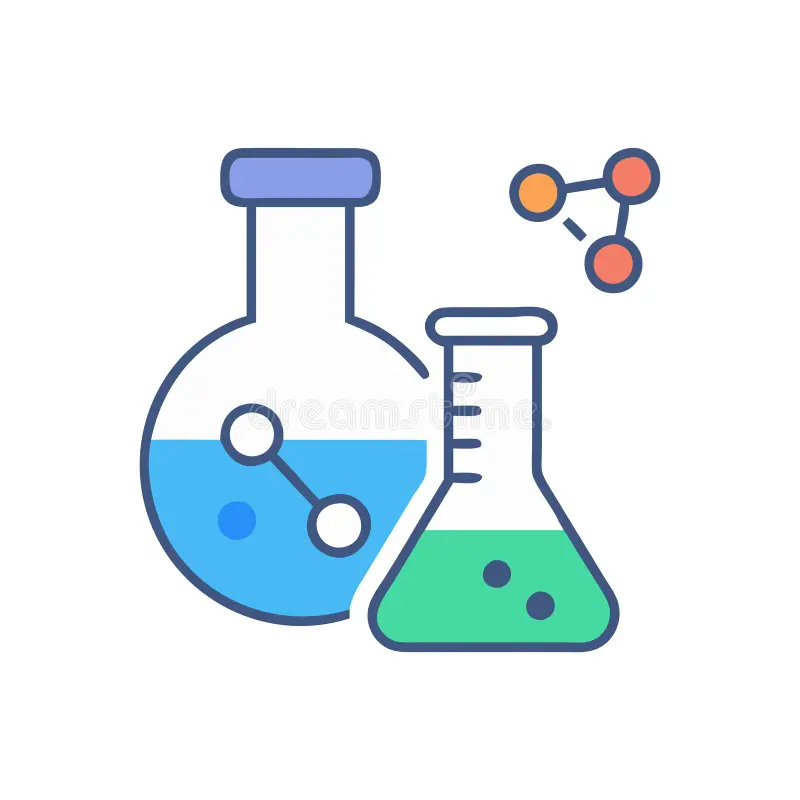

Technology-Driven Services
We provide comprehensive solutions from software development to consulting, training to infrastructure.
Comprehensive Technology Services
Explore our services tailored to your specific needs.
01
Custom Software Development
We develop custom software solutions tailored to customer needs on web and mobile platforms. We use globally recognized software development methods and techniques. Each project is designed together with the customer from start to finish and brought to life.
Web Applications
Mobile Applications
API Integration
ERP Modules
Reporting Systems
02
Database Management & Optimization
We provide enterprise database design, performance optimization, and management services. We ensure your data is secure, fast, and accessible. We offer comprehensive support for backup, disaster recovery, and data security.
Database Design
Performance Tuning
Data Migration
Backup Systems
Security Audits
03
Consulting & Training
We provide technology strategy, process improvement, and digital transformation consulting. We organize corporate training programs to prepare your employees for evolving technologies. We offer one-on-one or group training sessions with our expert team.
Digital Transformation
Process Analysis
Corporate Training
IT Strategy
Project Management

04
Hardware & IT Infrastructure
We implement, configure, and maintain corporate IT infrastructure. We provide comprehensive support for server systems, network infrastructure, and security systems.
Server Installation
Network Infrastructure
Security Systems
Hardware Procurement
Maintenance & Support
Süreç
Nasıl Çalışıyoruz?
Her projede takip ettiğimiz kanıtlanmış çalışma metodolojimiz.
Analiz
İhtiyaç ve süreç analizi

Tasarım
Mimari ve UI/UX tasarımı

Geliştirme
Agile sprint metodolojisi

Test
Kapsamlı kalite testleri
Teslimat
Canlıya alma & destek